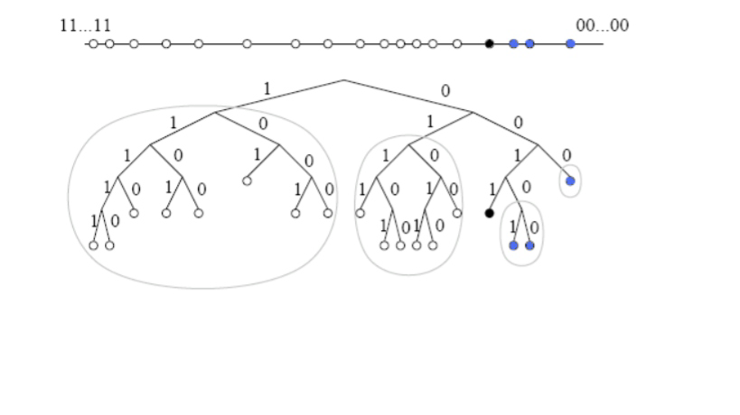
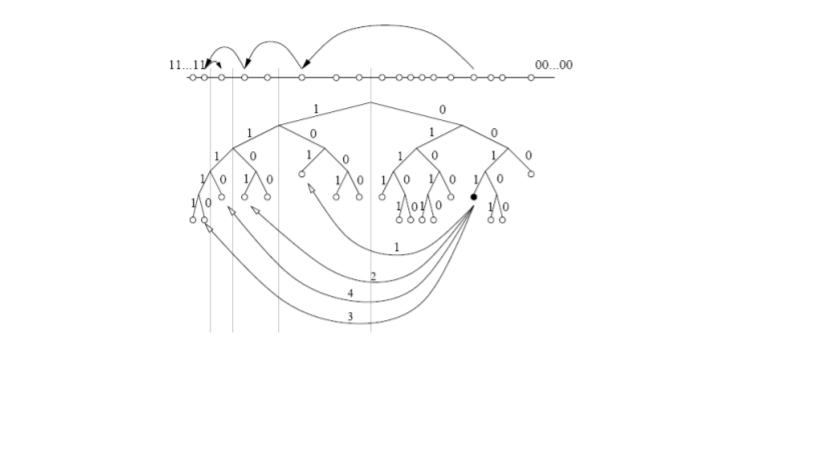

Kademlia(alias Kad) est un réseau de recouvrement créé pour décentraliser les autres réseaux
d'échange de fichiers Peer-to-Peer. Le protocole précise la structure du réseau Kademlia, les
communications entre les noeuds et l'échange d'information. Les noeuds communiquent grâce au
protocole UDP.
FONCTIONNEMENT :
A l'intérieur d'un réseau existant, Kademlia crée un nouveau réseau, à l'intérieur duquel chaque
noeud est identifié par un numéro d'identification, un ID (nombre binaire à 160 bits.)
Passée une phase d'amorçage consistant à contacter un noeud du réseau puis à obtenir un ID, un
algorithme calcule la «distance » entre deux noeuds, et interroge plusieurs noeuds suivant cet
algorithme afin de trouver l'information recherchée. Cet algorithme utilise une notion de distance
entre deux noeuds, calculée grâce à une opération mathématique (OU exclusif, aussi appelée
XOR) délivrant un résultat sous forme de nombre entier : la «distance». Cette dernière n'a rien à
voir avec la situation géographique des participants, mais modélise la distance à l'intérieur de la
chaîne des ID. Il peut donc arriver qu'un noeud en Allemagne et un noeud en Australie soient
«voisins ».
Une information dans Kademlia est conservée dans des «valeurs », chaque valeur étant jointe à
une «clé ». On dit de Kademlia qu'il est un réseau < valeur,clé >.
Lors de la recherche d'une certaine clé, l'algorithme explore récursivement le réseau au cours de
différentes étapes, chaque étape s'approchant plus près de la clé recherchée, jusqu'à ce que le
noeud contacté retourne la valeur, ou que plus aucun noeud ne soit trouvé. La taille du réseau
n'influe pas énormément sur le nombre de noeuds contactés durant la recherche ; si le nombre de
participants du réseau double, alors le noeud de l'utilisateur doit demander l'information à un
seul noeud de plus.
D'autres avantages sont inhérents à une structure décentralisée, augmentant par exemple la
résistance à une attaque de déni de service. Même si toute une rangée de noeuds est submergée,
cela n'aura que des effets limités sur la disponibilité du réseau, qui «recoudra » le réseau autour
de ces trous.
TABLE DE HACHAGE :
Une fonction de hachage est une fonction qui est « statistiquement injective » : si x != y alors
probablement h(x) != h(y) Une table de hachage est une structure où les données sont stockées
selon la valeur d’une fonction de hachage:
0
1
h(x)
3
h(y)=h(z)
h(t)
6
7
x
y,z
t
DHT :
Une table de hachage distribuée (DHT) est une table de hachage implémentée par un ensemble
de pairs communiquant à travers un réseau. Dans une DHT, la valeur de la fonction de hachage
détermine le pair où la donnée est stockée.
IDENTIFICATEUR :
Un identificateur est un entier de 160 bits.
A = 01111101111001010...
Les identificateurs:
Identifient les noeuds
Servent de clés
Typiquement :
Les identificateurs des noeuds sont tirés au hasard
Les clés sont les hashes SHA-1 des « vraies » clés
LA METRIQUE XOR :
distance entre id1 et id2 : d(id1,id2)= id1 XOR id2
Exemple: si ID codé sur 3 bits:
d(1,4)== d(0012,1002)
= 0012 XOR 1002
=0012
= 5
ROUTAGE EN XOR :
Connexions entre les noeuds:
Chaque noeud A dans Kademlia maintient une table de routage composée d’ensembles nommés
buckets. Les buckets sont classés par ordre d’éloignement selon la métrique XOR.
Un bucket regroupe k noeuds dont les distances sont comprises entre 2 i et 2 i+1.
Le degré moyen d’un noeud est donc O (k*log2^bN ).
Tous les noeuds du même bucket sont à la même distance du noeud A.
Chaque bucket correspond donc à un sous arbre et contient k voisins classés selon leur
ancienneté dans le système.
A l’origine, Kademlia ne maintient pas des voisins séquentiels.
Cependant, cette information peut être tirée directement de sa table de routage.
En effet, les premiers buckets contiennent les identifiants des noeuds les plus proches selon la métrique XOR.
Ces noeuds nommés sibling constituent l’ensemble des voisins séquentiels dans S/Kademlia.

Figure 1: Voisinage du noeud 0011. Les cercles en bleu représentent voisins sibling du
noeud0011.
ROUTAGE
Lorsqu'un noeud S cherche une clé K, il recherche itérativement les K noeuds les plus proches de
K, S commence par identifier et envoyer sa requête à ses K voisins les plus proches parmi ses
buckets. Ces voisins vont répondre à leur tour en renvoyant leurs K noeuds les plus proches,
présents dans leurs tables de routage. Le noeud S met à jour sa table de routage puis renvoie sa
requête aux K nouveaux noeuds les plus proches. La même procédure se répète jusqu’à ce que le
noeud S ait contacté tous les autres noeuds renvoyés dans les réponses, et ainsi ait récupéré les K
noeuds dont l’ID est le plus proche de la clé K. Cet algorithme a pour but d'augmenter le préfixe
commun entre l'identifiant de la clé et celui des noeuds contactés à chaque saut. Le noeud qui
effectue une recherche contacte donc un à un tous les noeuds intermédiaires de la route jusqu’à
atteindre la destination. Ceux ci lui fournissent en retour une liste de contacts possibles pour le
saut suivant (Figure 2). Le nombre de sauts moyen nécessaires pour une recherche de clé sur un
alphabet de 2b chiffres est O log(2^b)N .

Figure 2:Exemple de route Kademlia : le noeud 0011 localise le noeud 1110
MAINTENANCE :
la maintenance dans Kademlia est implicite. Lorsqu’un noeud reçoit un message find_node, il met
à jour le bucket approprié. Si le noeud expéditeur se trouve déjà dans ce bucket, il est déplacé en
bas de la liste. Sinon, si le bucket n’est pas plein, la nouvelle entrée est insérée. Si le bucket est
plein, le noeud A émet un PING vers le voisin le plus ancien dans ce bucket. Si ce dernier répond
au PING, il est alors déplacé en fin de liste et la nouvelle entrée est ignorée. Kademlia conserve
donc dans sa table les noeuds les plus anciens dans le réseau.